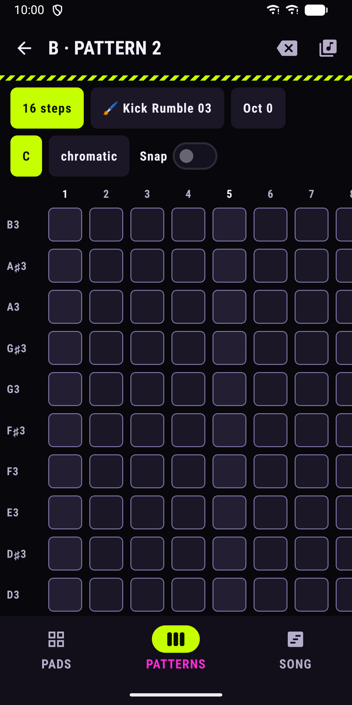

Tekkno Rave DAW: Crea Beats
Groovebox de hard techno y hardcore con pads, cuadrícula de tono y canción.





Acerca de la app
Tekkno Rave DAW es una pequeña groovebox para hard techno, gabber y hardcore. Esboza un tema en tu móvil: toca pads, pinta notas en una cuadrícula de tono y ordena patrones en una canción. PADS - 16 pads. Los 12 primeros traen un kit listo: bombos, hats, palmas, caja, acid stab, hoover, sirena y bajo sub. - Graba una muestra con el micrófono directamente en un pad. - Importa tus propios archivos de audio con el selector de archivos del sistema. - Graba en directo: toca los pads sobre un bucle de 16 pasos. Tus golpes se ajustan a la cuadrícula (1/16 o 1/8). Pausa, vuelve a grabar para añadir capas y guarda la toma como un patrón nuevo. CUADRÍCULA DE PATRONES - Los pasos van de izquierda a derecha y el tono de abajo arriba. Una fila más alta es un tono más alto. - 8, 16, 32 o 64 pasos, cambio de octava y ajuste opcional a una escala. - Pinta con cualquier muestra, así que bombos, stabs y leads pueden convivir en un patrón. - Deshacer y rehacer. Cada cambio se guarda automáticamente. CANCIÓN - 4 pistas. Elige un patrón y toca un compás para colocarlo. Los clips de una pista nunca se solapan. - Mueve los clips arrastrando o con el menú del clip. - Tempo de 140 a 220 BPM. 50 MUESTRAS INCLUIDAS Bombos, hats, rides, palmas, cajas, bajos sub y acid, stabs hoover y rave, sirenas, risers e impactos. Las muestras incluidas se publican bajo CC0. Las licencias están en Ajustes. COMPRA - La app empieza con 3 proyectos. - Una única compra dentro de la app (pago único, no es una suscripción) desbloquea proyectos ilimitados y la exportación a WAV (44,1 kHz, 16 bits). - Todo lo demás funciona sin comprar. - Puedes restaurar la compra con la misma cuenta de Google. WIDGET DE INICIO Muestra tus últimos proyectos con su BPM. Toca uno para abrir sus pads. Un interruptor en Ajustes oculta los nombres de los proyectos en la pantalla de inicio. PRIVACIDAD - La app funciona sin cuenta y sin conexión a internet. No declara el permiso de internet. - Sin analítica, sin seguimiento, sin publicidad. - Los proyectos y las grabaciones se quedan en tu dispositivo y no forman parte de las copias de seguridad en la nube. - El micrófono solo se usa mientras grabas una muestra. La app funciona también sin él. - Las exportaciones WAV se guardan donde tú elijas. - En Ajustes hay un botón "Borrar todos los datos". ACCESIBILIDAD - Sigue el tema claro u oscuro del sistema. - Etiquetas para lectores de pantalla en pads, celdas de la cuadrícula y clips, con alternativas por toque para los gestos de arrastre. - Zonas táctiles grandes, diseños para móvil y tableta. - Respeta el ajuste del sistema para quitar animaciones. Los pulsos visuales se mantienen por debajo de 3 por segundo.